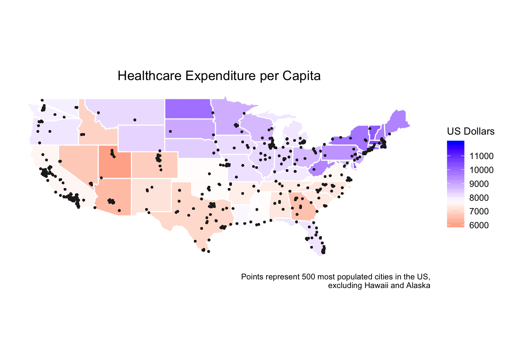

In the US, state governments have a great deal of control over public spending on healthcare, partly through programs like Medicare and Medicaid. As a result, healthcare spending is not uniform across the country. These differences are illustrated in the map below where healthcare expenditure by state is presented in millions of dollars and black dots represent the 500 cities used in our analysis.

This map suggests that there very well may be regional differences in healthcare spending. Exploring this question shows clear graphical differences in regional spending:
Further analysis shows that there is a statistically significant difference between regions and confirms that healthcare expenditure is not uniform across the country:
| term | df | sumsq | meansq | statistic | p.value |
|---|---|---|---|---|---|
| region | 3 | 25422970 | 8474323 | 7.43803 | 0.0003559 |
| Residuals | 47 | 53548214 | 1139324 | NA | NA |
| Term | Test | Test Statistic | P-Value |
|---|---|---|---|
| Region | ANOVA - analysis of variance | 7.43803 | 0.0003559 |